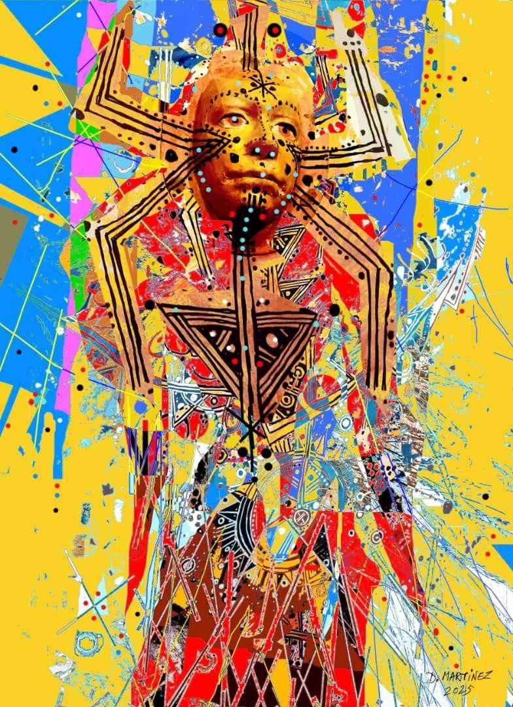

La femme tatouée
Dans le tumulte des couleurs,
elle se dresse —
corps de feu, âme de terre,
peau écrite par le temps.
Ses veines sont des chemins,
des lignes noires qui chantent
la mémoire des ancêtres,
le cri des femmes effacées,
le souffle du désert.
Sous ses tatouages,
le monde respire —
le sable, les étoiles,
et la poussière d’un peuple
qu’on ne peut pas taire.
Son regard perce la toile,
mi-dieu, mi-silence.
Elle porte le chaos comme une parure,
le chaos des couleurs,
le chaos de la vie.
Chaque trait sur sa peau
est une prière,
chaque point, une cicatrice,
chaque triangle, une naissance.
Elle ne pose pas — elle règne.
Totem vivant,
gardienne de la mémoire,
femme tatouée
par la main du monde.
Djamel Metref
At Yenni le 6 octobre 2025

← Tous les poèmes